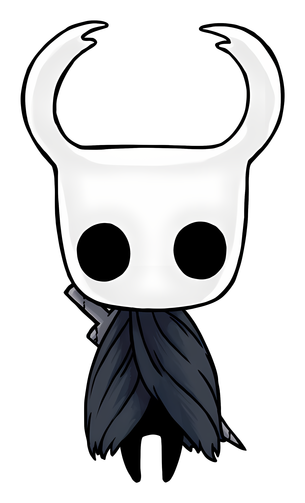

Hollow Knight se passa em Hallownest, um reino antigo de insetos, que já foi próspero, cheio de vida, arte e conhecimento. A parada é que o reino entrou em decadência por causa de uma praga misteriosa, conhecida como Infeção. Essa praga deixa os insetos enlouquecidos e destrói a ordem do reino. O jogo começa com o Cavaleiro (aquele bonequinho silencioso) chegando a Hallownest, sem memórias do passado. Ele descobre que a Infecção começou quando o Rei Palestra (o antigo rei inseto) tentou conter a ameaça de um ser chamado The Radiance, uma entidade divina/mística que personifica sonhos e memórias esquecidas.
O protagonista de Hollow Knight é um pequeno cavaleiro silencioso, envolto em mistério, que explora as profundezas de Hallownest enfrentando inimigos e descobrindo segredos do reino perdido. Apesar de sua aparência simples, sua coragem e determinação revelam um herói inesperadamente resiliente diante do desconhecido.
 A Radiance era adorada pelos insetos como deusa da luz, mas o reino começou a esquecer dela. O rei, para proteger seu povo, tentou prender a Radiance usando hóspede de contensão, que é basicamente criar cavaleiros “vazios” para selar a entidade. O problema? A Radiance ainda espalhou a Infecção, e Hallownest entrou em colapso. O Cavaleiro vai explorando o reino, encontrando bosses (insetos corrompidos ou guardiões), memórias de antigos habitantes, e descobre pouco a pouco que ele mesmo é uma das criações para conter a Radiance. Existem múltiplos finais, mas todos giram em torno de: Confrontar a Radiance (em sonhos ou realidade). Aceitar o selo da Radiance e permanecer como o novo guardião. Ou até libertar a Radiance, deixando o ciclo continuar. Além disso, tem o lance dos dreamers, três insetos que se sacrificaram para selar o reino. Eles são os que seguram a Radiance dentro do Hollow Knight, e só quando você derrota ou ativa certos eventos que você consegue chegar à verdadeira batalha final. O mais doido de Hollow Knight é que a história não é contada direto. Ela tá em cada detalhe: diálogos curtos, nomes de lugares, inimigos, e até nas músicas. O jogo faz você sentir o mundo morrendo e sendo esquecido, que é o coração da experiência. Inclusive, na Cidade das Lagrimas, existe a estátua memorial do Cavaleiro Vazio, lembrando a importância e o sacrifício dessas criações no ciclo de Hallownest.No fim das contas, Hollow Knight é sobre sacrifício, memória, decadência e redenção. O Cavaleiro é só o meio pra entender a história de Hallownest, e você, jogando, sente esse peso silencioso do mundo caindo aos poucos. <